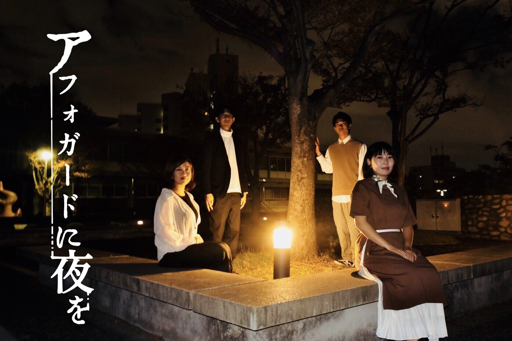
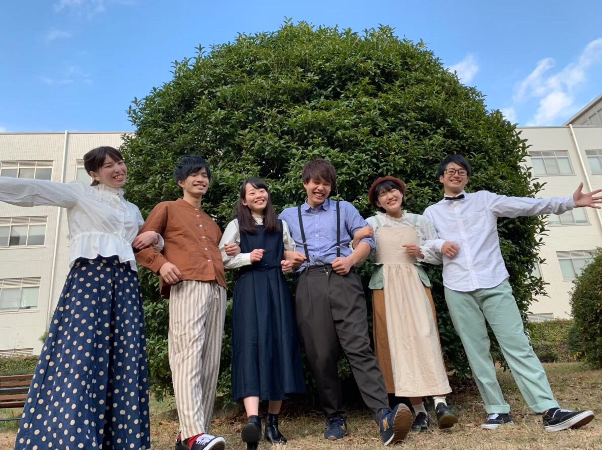
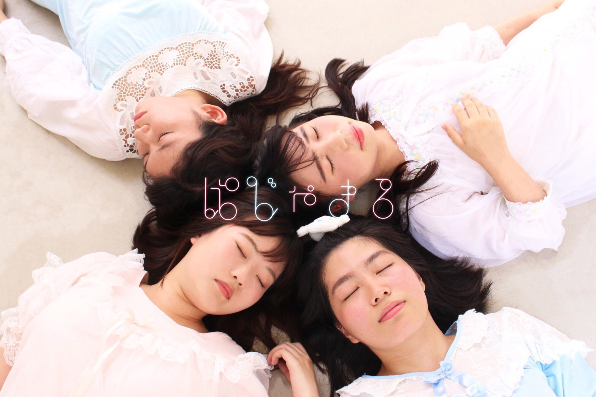
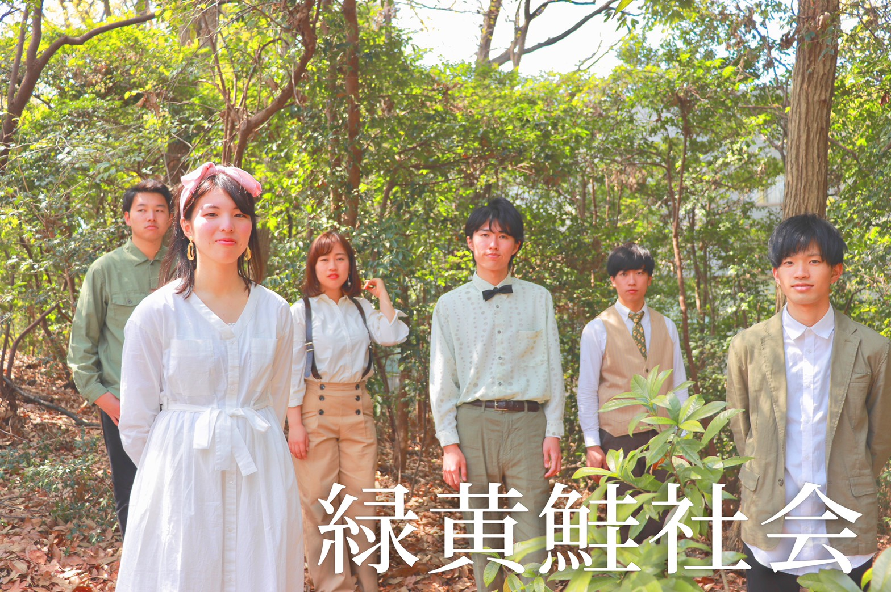
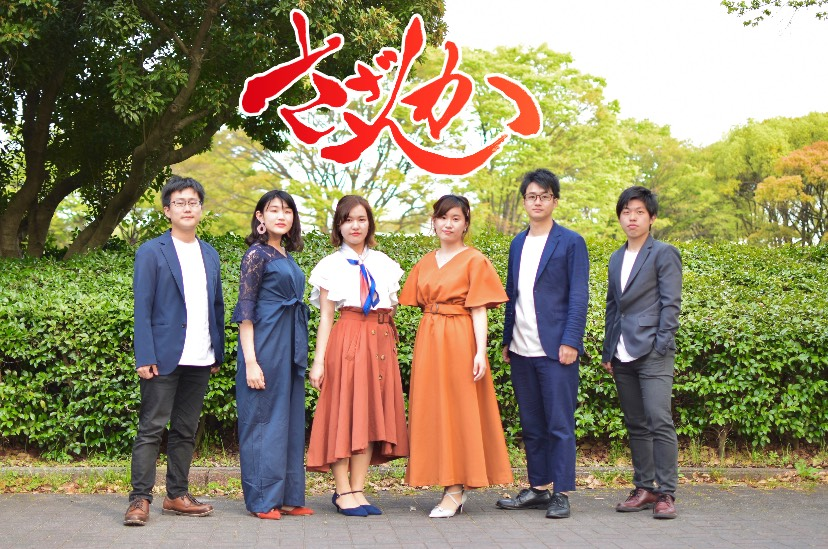
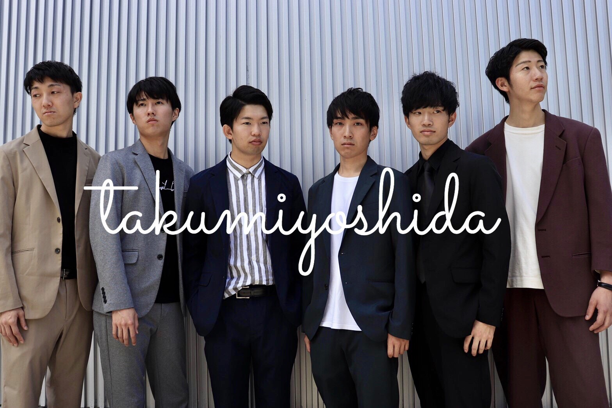
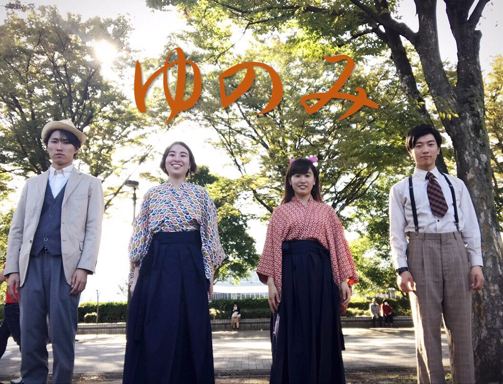
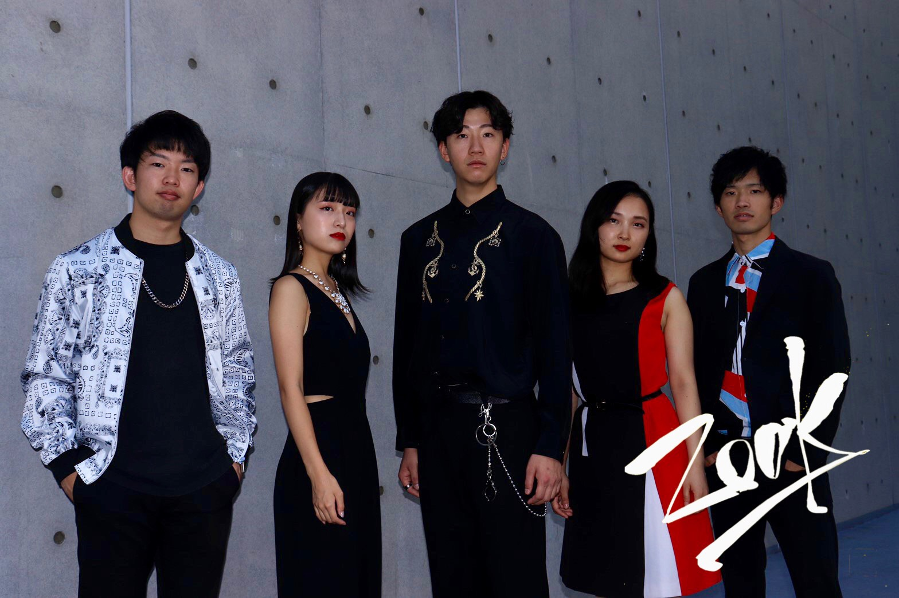

2,3回生混合グループ“アフォガードに夜を”です。
冷たいアイスクリームに熱いエスプレッソをかけるアフォガードのように、情感の対比や
様々な表情をお魅せします。
アフォガードに夜を

chapati

こんにちは！chapatiです！
懐かしの名曲を、暖かく和やかにお届けします。
ノスタルジックなメロディーに是非耳を傾けてください！
懐かしの名曲を、暖かく和やかにお届けします。
ノスタルジックなメロディーに是非耳を傾けてください！
ぱじゃまる

おはよ〜！ぱじゃまるだよ〜〜！♥
1/18はみんなをぱじゃまるのパジャマパーティーにご招待しちゃうまる！⭐
みんな楽しむ準備はできてるかな？
当日会場で待ってるまるよ〜〜！
🐰♥✨
Twitterアカウントはこちら✉@Pajamaru_jP
1/18はみんなをぱじゃまるのパジャマパーティーにご招待しちゃうまる！⭐
みんな楽しむ準備はできてるかな？
当日会場で待ってるまるよ〜〜！
🐰♥✨
Twitterアカウントはこちら✉@Pajamaru_jP
緑黄鮭社会

名古屋発4ピースバンド・緑黄色社会の楽曲をアカペラで表現しています。
彩り豊かな一つ一つの楽曲の魅力、そして私たちの思いが皆さんに届くよう歌います。
彩り豊かな一つ一つの楽曲の魅力、そして私たちの思いが皆さんに届くよう歌います。
さざんか

「今悩んでいる人の力に これからの人生のお守りに」僕らの音楽よ、届け
takumiyoshida

男6人で生み出す”繊細かつ情感を揺さぶるサウンド”
ゆのみ

ご機嫌よう。3回生同期バンドゆのみです。
ことばを奏でてつむぎ出す、たおやかな調べをご堪能ください。
「日本の古き良き景色を」皆さまに。
ことばを奏でてつむぎ出す、たおやかな調べをご堪能ください。
「日本の古き良き景色を」皆さまに。
ZOUK

5人の個性を織り交ぜ、邦楽にはない洋楽の魅力を表現。『洋楽ってやっぱりかっこいい
』そう感じていただけるステージをお届けします！Are you ready to be into ZOUK?